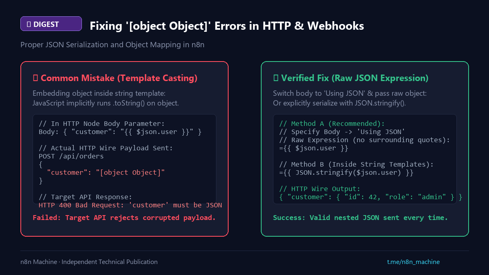

Digest
Eliminating "[object Object]" in HTTP Request Nodes
- Published
- Checked against
- docs.n8n.io
- Status
- Corrected, revision 2

How to send structured JSON without string-casting.
01Symptom and cause
- The API returns
400and the body shows"[object Object]". - An object inside quotes or a string template is converted with
.toString().
02Fix
- Preferred: set Specify Body to
Using JSONand pass=$json.myObjectwithout quotes. - Inside a string: serialize it with
JSON.stringify($json.myObject).
Sourcen8n Data Structure Docs